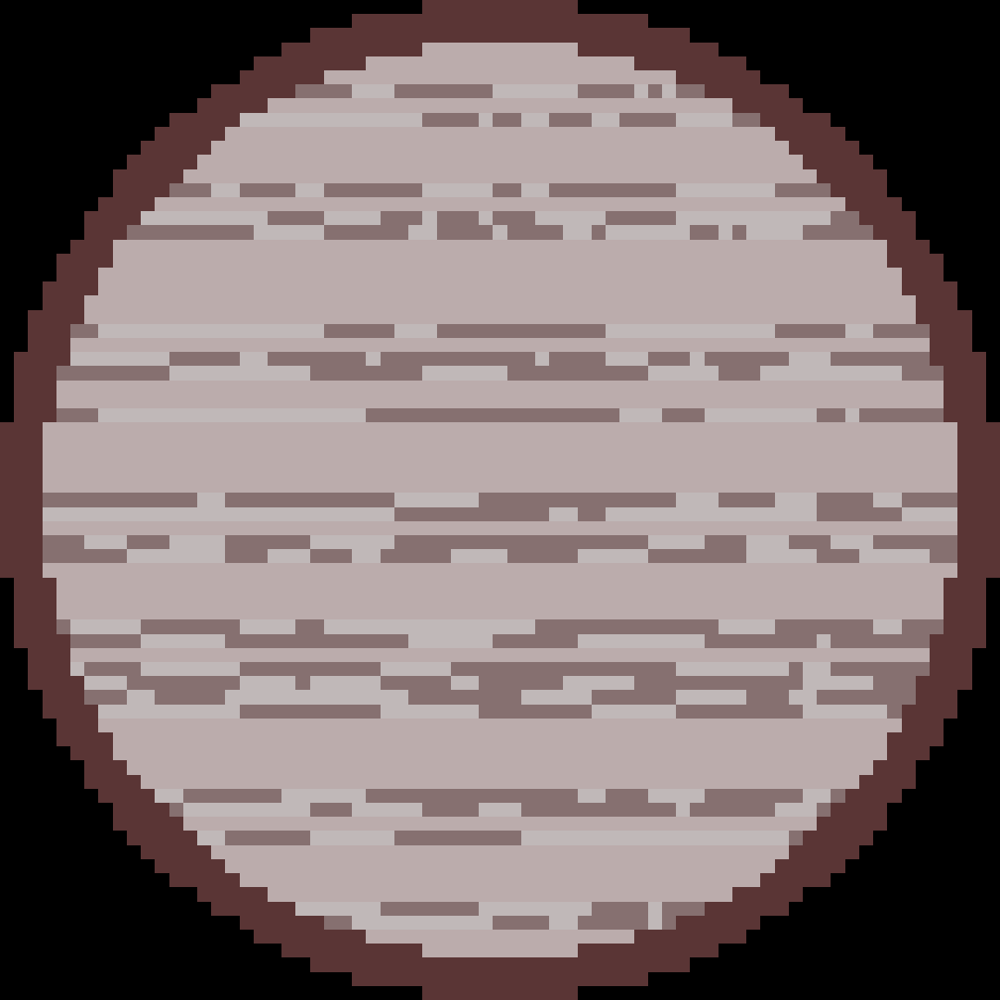

SWEEPS-04 är en av de exoplaneter som är längst bort från jorden. Avståndet mellan jorden och SWEEPS-04 är cirka 27710 ljusår. 27710 ljusår är ungefär 2,62*10^17 kilometer. Den upptäcktes den 4 oktober 2006. Planeten har en massa som är mindre än ,.8 gånger Jupiters massa. Den tar 4,2 dagar för den att kretsa runt sin stjärna och är cirka 0,06 AU från sin stjärna.